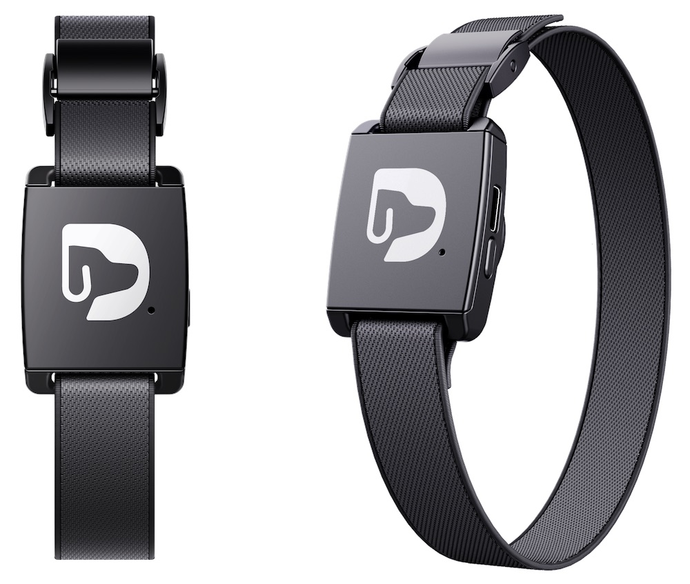
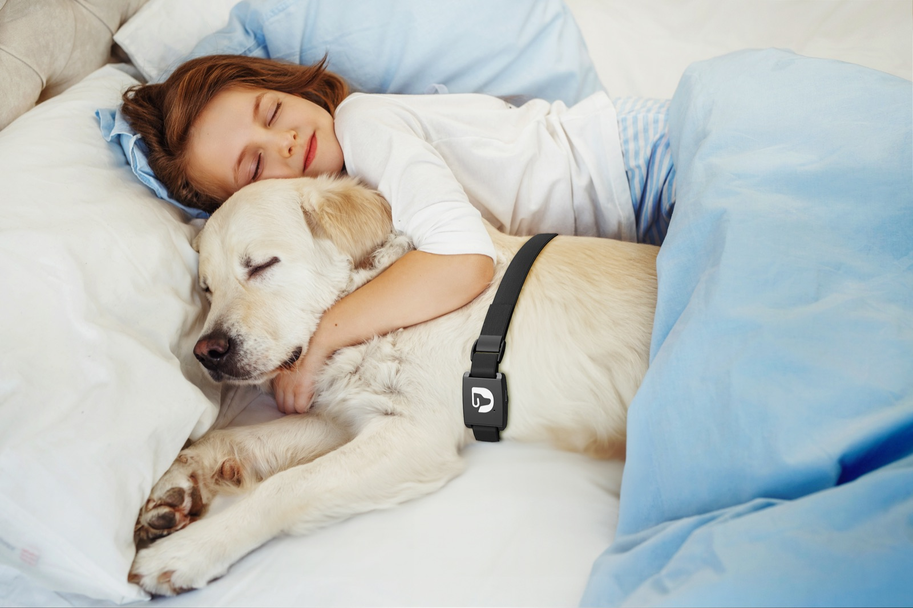
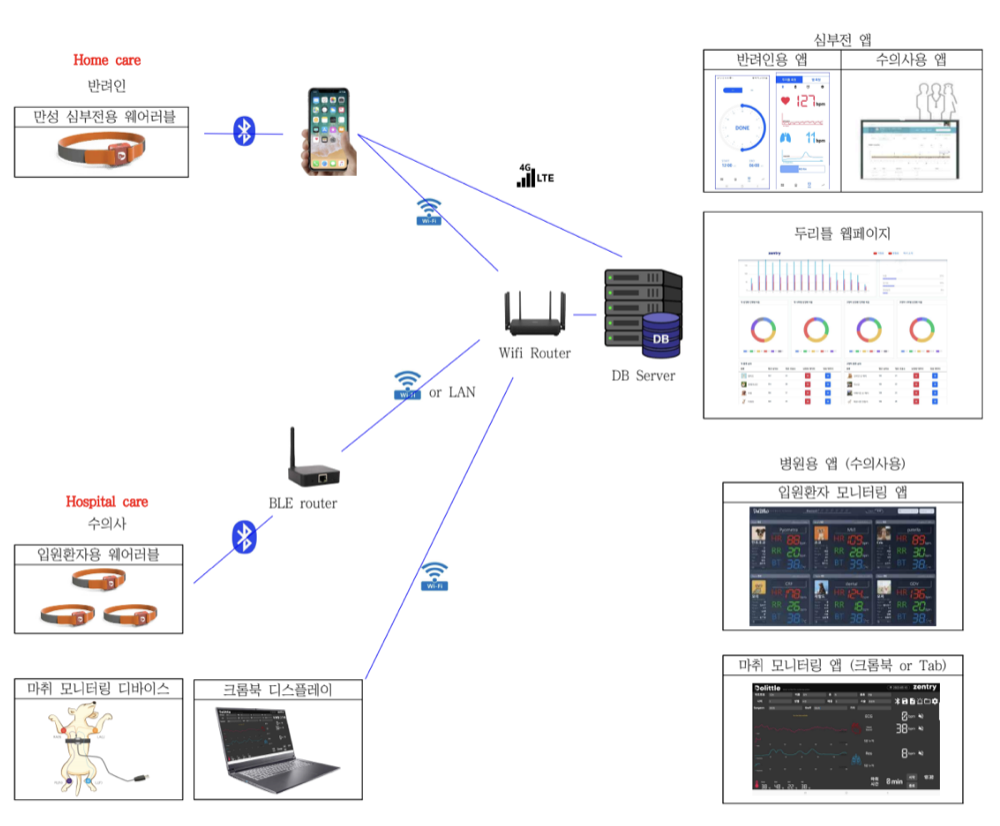
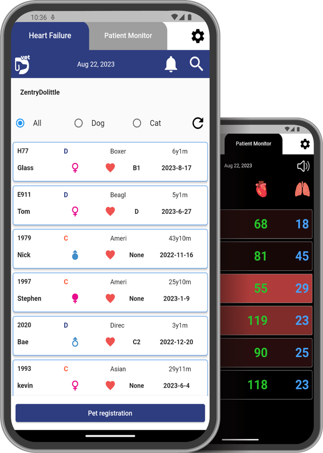
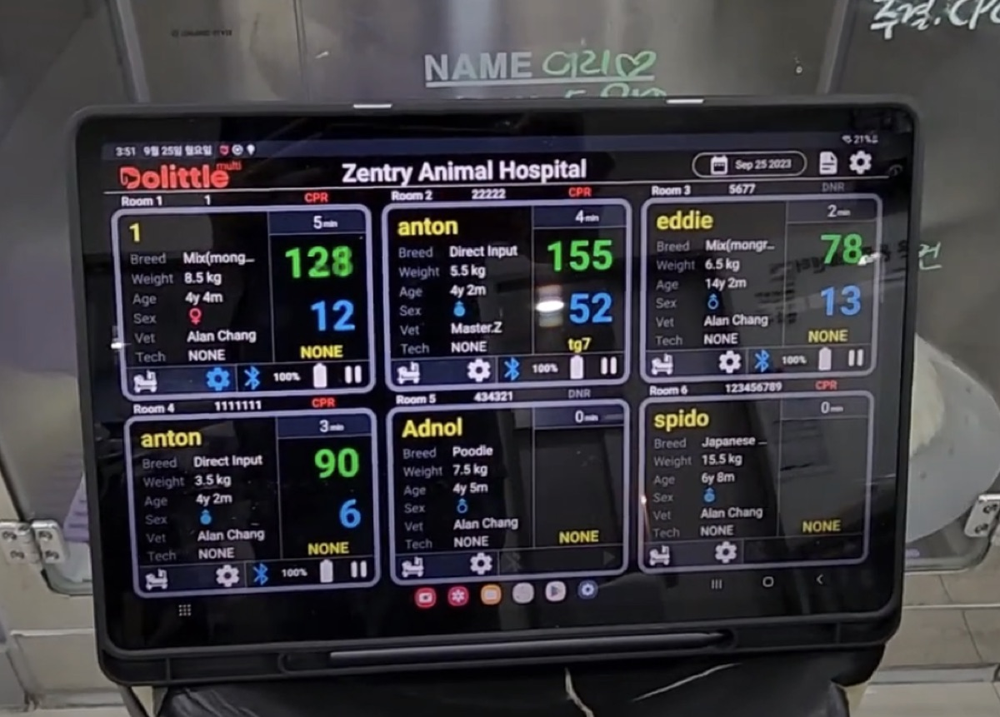
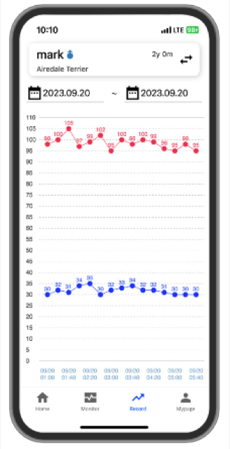
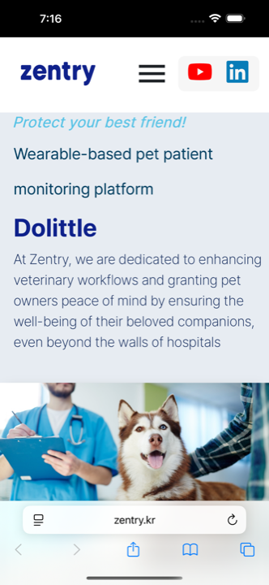
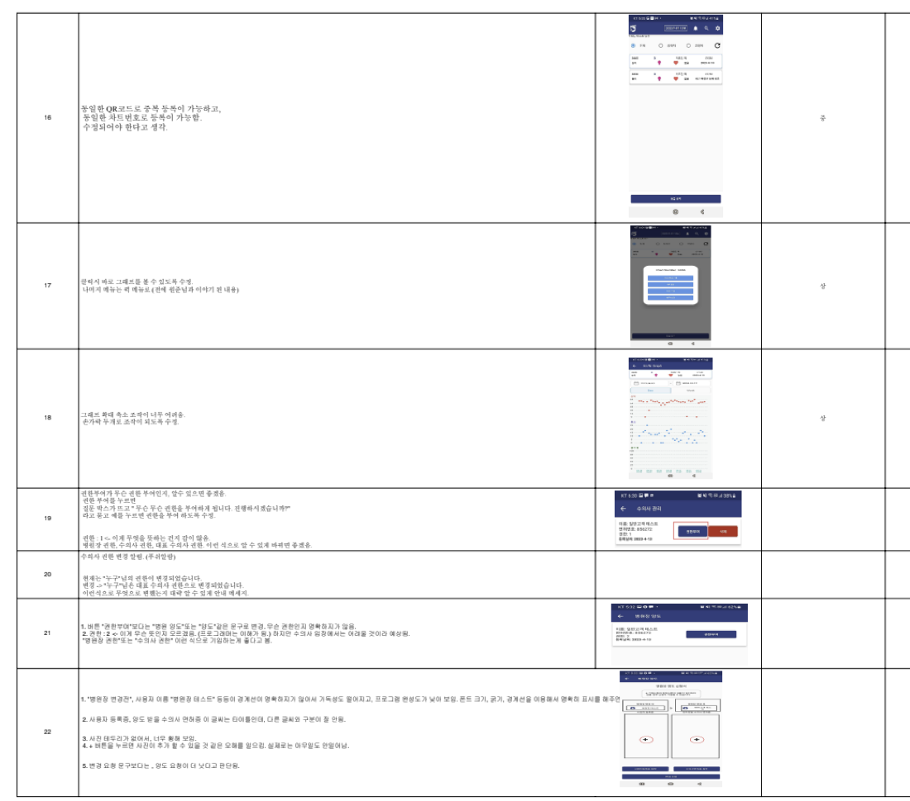

측정은 반려동물이 착용하는 웨어러블 밴드가 담당합니다. 밴드가 심박수와 호흡수를 읽어 블루투스로 넘기고, 그 값이 앱과 병원 화면에 실시간으로 나타납니다.
제가 맡은 일은 이 숫자를 사람이 판단할 수 있는 화면으로 만드는 쪽이었습니다. 같은 심박수 값이라도 집에서 보호자가 보는 화면과 수술실에서 수의사가 보는 화면은 완전히 달라야 합니다.

심부전 등 만성 질환을 앓는 반려동물의 심박·호흡을 실시간으로 보는 디지털 헬스케어 플랫폼. 가정용 앱부터 동물병원 수술실에서 쓰는 마취 모니터링 화면까지, 2년 6개월간 앱과 웹을 함께 맡았습니다.

(주)젠트리는 심부전 등 만성 질환을 앓는 반려동물을 위한 디지털 헬스케어 솔루션을 만듭니다. 가정용 모니터링 기기부터 수의사용 전문 마취 모니터링 장비까지, 반려동물의 건강 상태를 실시간으로 체계적으로 관리하는 ‘두리틀’ 시리즈가 제품군입니다.
측정은 반려동물이 착용하는 웨어러블 밴드가 담당합니다. 밴드가 심박수와 호흡수를 읽어 블루투스로 넘기고, 그 값이 앱과 병원 화면에 실시간으로 나타납니다.
제가 맡은 일은 이 숫자를 사람이 판단할 수 있는 화면으로 만드는 쪽이었습니다. 같은 심박수 값이라도 집에서 보호자가 보는 화면과 수술실에서 수의사가 보는 화면은 완전히 달라야 합니다.

재직 기간 동안 아래 세 가지를 담당했습니다.
두리틀은 앱 하나가 아니라 사용 장소에 따라 갈라지는 여러 화면의 묶음입니다. 어떤 화면을 만들지 정하기 전에 데이터가 어디서 와서 어디로 가는지를 먼저 그렸습니다.

화면을 나눈 기준은 보는 사람이 그 순간 무엇을 결정해야 하는가였습니다. 보호자는 “며칠간의 흐름이 괜찮은가”를 보고, 마취실 수의사는 “지금 이 숫자가 위험한가”를 봅니다. 전자는 그래프, 후자는 큰 숫자와 색으로 갔습니다.
두리틀 벳은 병원에 등록된 반려동물의 심박수와 호흡수를 수의사가 실시간으로 모니터링하는 앱입니다. 수술 중에는 두리틀 멀티 앱으로 생체 데이터를 실시간 연동·확인할 수 있고, 병원 내 직원 관리 기능까지 통합해 수의사용 헬스케어 플랫폼으로 확장 개발됐습니다. 저는 초기 수의사 앱의 화면 구성과 기획 단계부터 참여했습니다.

같은 앱 안에 성격이 다른 두 화면을 넣어야 했습니다.
목록은 찾는 화면이라 흰 배경에 정보를 촘촘히 담고,
모니터는 지켜보는 화면이라 검은 배경에 숫자만 크게 남겼습니다.
어두운 수술실·입원실 조명에서 멀리서도 읽혀야 하고, 값이 범위를 벗어나면 카드 전체가 붉게 바뀌어
숫자를 읽기 전에 이상을 먼저 알아차릴 수 있게 했습니다.
연결이 끊겨 값이 없을 때는 0이 아니라 --로 표시해, 측정값 0과 미수신을 구분했습니다.
두리틀 싱글 및 마취 화면에서는 TCP 소켓을 통해 수신된 바이트 데이터를 16진수로 변환한 뒤, 이를 실시간으로 화면에 표시하는 기능을 구현했습니다. 측정 기기가 보내는 원본 바이트 스트림을 화면 단위의 값으로 바꾸는 구간입니다.
실시간 화면이 “지금”을 담당한다면, 이 그래프는 “지나간 구간”을 담당합니다. 수술 시작·종료 시각을 함께 표시해, 값의 변화가 어느 처치 구간에서 일어났는지 짚을 수 있게 했습니다.

화면이 실제로 놓이는 자리를 보고 나서 바꾼 것들이 있습니다. 태블릿이 벽에 붙어 있거나 장비 사이에 끼워져 있어서 서 있는 거리에서 읽히는 크기가 필요했고, 장갑을 낀 손으로도 누를 수 있도록 터치 영역을 넉넉히 잡아야 했습니다.
두리틀 홈 화면에서는 REST API를 통해 고객 데이터를 조회하고 수정하는 기능을 구현했습니다.
보호자용 화면은 수의사용과 목적이 다릅니다. 지금 값이 위험한지 판단하는 게 아니라, 기간을 정해 흐름을 보는 것이 주된 사용법입니다. 그래서 상단에 날짜 범위 선택을 두고, 심박수와 호흡수를 같은 시간축 위에 색만 달리해 겹쳐 놨습니다.
하단 탭은 Home · Monitor · Record · Mypage 네 개로만 두고, 기록을 보는 Record를 별도 탭으로 분리했습니다.

공식 웹사이트는 이미 운영 중이었지만 구조에 문제가 있었습니다. 업데이트 기획에 참여한 뒤, 문제를 정리하고 다시 만드는 작업을 맡았습니다.
결과물은 데스크톱과 모바일에서 같은 내용을 각각의 폭에 맞게 보여주는 형태가 됐습니다. 제품 소개는 대상별로 수의사 / 보호자 / 반려동물 세 갈래로 나누어, 들어온 사람이 자기에게 해당하는 줄을 먼저 찾을 수 있게 했습니다.

데이터 통신뿐 아니라 서비스 전반의 품질 개선에도 참여했습니다. 기능 구현에서 멈추지 않고, 주기적인 팀 회의와 협업을 통해 앱의 완성도를 계속 높였습니다.
개발 과정에서 팀원들이 기능별 개선사항과 사용자 피드백을 정리한 문서를 공유해 줬고, 이를 근거로 UI/UX, 동작 흐름, 예외 처리 등 여러 측면에서 기능을 보완하며 안정성을 강화했습니다.
문서에는 “같은 QR코드로 중복 등록이 가능하고 같은 차트번호도 등록된다”처럼 정상 흐름에서는 드러나지 않는 문제가 많았습니다. 실제 병원에서는 이런 중복이 곧 오진으로 이어질 수 있어, 예외 처리 항목을 별도로 추적했습니다.

앱은 iOS와 안드로이드를 함께 내야 해서 Flutter로 갔고, 측정 기기와의 통신은 실시간성이 필요해 TCP 소켓과 WebSocket을 사용했습니다. 공식 웹사이트는 유지보수 문제를 해결하려는 목적이 분명했기 때문에 컴포넌트 구조를 쓸 수 있는 React를 골랐습니다.
두리틀은 화면이 틀리면 사람이 잘못 판단하게 되는 종류의 서비스였습니다. 수술실에서 값을 잘못 읽거나, 미수신을 0으로 오해하거나, 같은 환자가 두 번 등록되면 그건 UI 문제로 끝나지 않습니다.
그래서 이 프로젝트에서 배운 것은 대부분 정상 흐름 밖에서 나왔습니다. 데이터가 안 올 때, 배터리가 없을 때, 같은 값이 두 번 들어올 때 화면이 무엇을 말해야 하는지를 팀 피드백 문서를 따라가며 하나씩 채운 2년 6개월이었습니다.
자동 응답 창입니다
안녕하세요. 궁금한 점을 남겨주시면 확인 후 메일로 답변드릴게요.